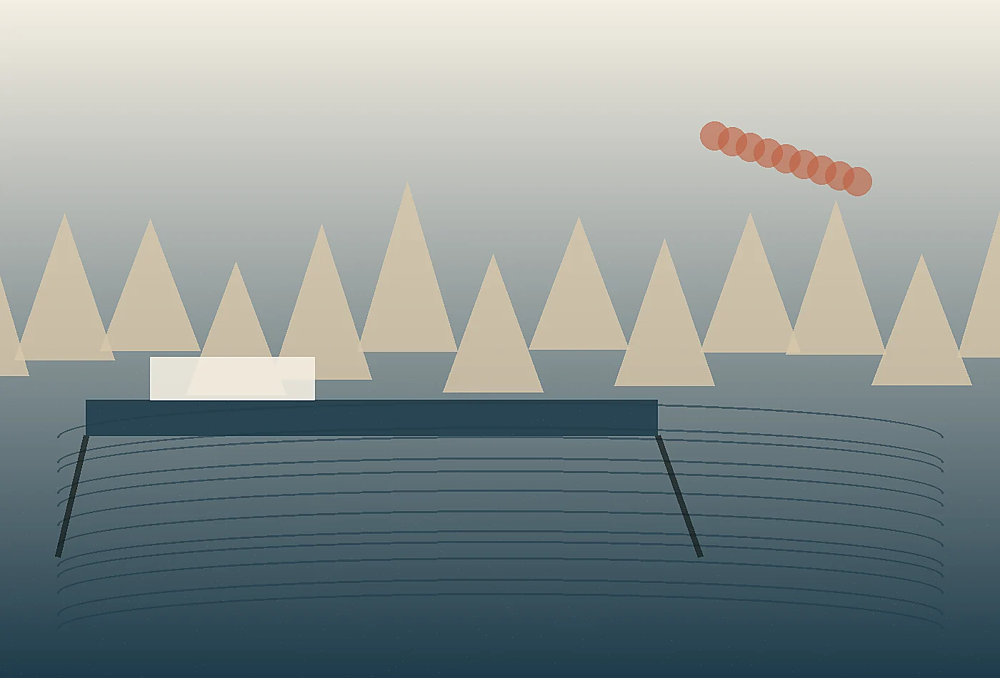

Contact details
Pier 4, North Basin, Portland, ME 04101+1 (207) 555-0184
hello@kansocurrent.example
Wabi-sabi coastal strategy studio
Share the challenge, place, team, or upcoming deadline. Kanso Current replies with a clear next step, not a canned pitch.
Plan a quieter edge
Tell us what is changing, who is involved, and what deadline or decision is creating pressure. A useful first note does not need polish. It needs context. We will reply with the right format for a conversation, diagnostic, or referral.
Within two business days, a senior lead reviews the note and suggests a focused next step. If the project is not a fit, we will say so directly and recommend another route when possible.

Helpful materials include photographs, menus, route maps, audience notes, board deadlines, existing documents, or a simple list of what feels stuck. Send only what is safe and appropriate to share.
If you are unsure what to send, describe the moment that keeps repeating: a confused arrival, a strained handoff, a difficult board question, a visitor behavior that surprises staff, or a beautiful place that somehow feels harder to use than it should. Those everyday details are often the beginning of the most valuable assignment.
For harbor and waterfront projects, we are particularly interested in operating calendars, tide or weather complications, public-private boundaries, accessibility goals, and the informal workarounds staff already use. Those details help us understand whether the first step should be a site walk, stakeholder session, wayfinding audit, or short decision brief for leadership.
We can meet on site, review photographs remotely, or begin with a short call around maps and operating notes. The first conversation usually ends with one of three recommendations: a brief diagnostic, a defined project scope, or a pause until a better decision moment arrives. That honesty keeps the engagement useful from the beginning.
A short list of known constraints is welcome: seasonal hiring, public approvals, construction timing, ferry schedules, neighboring businesses, accessibility concerns, or grant deadlines. These realities help us shape a first step that respects the harbor instead of interrupting it.